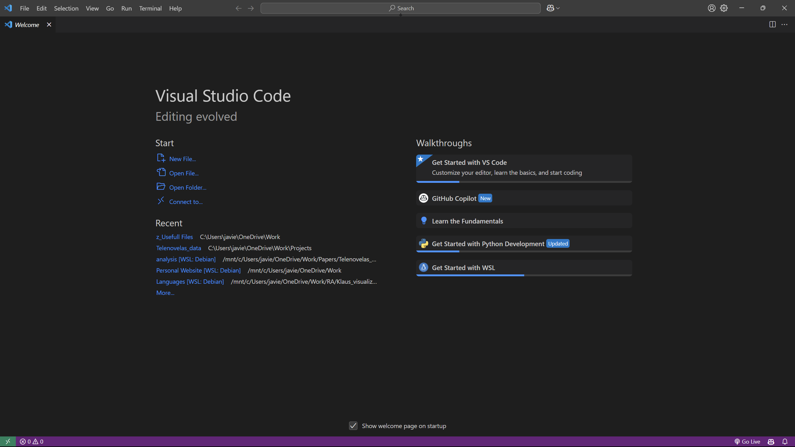
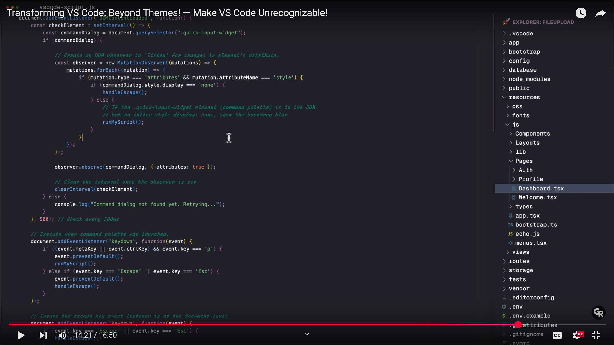
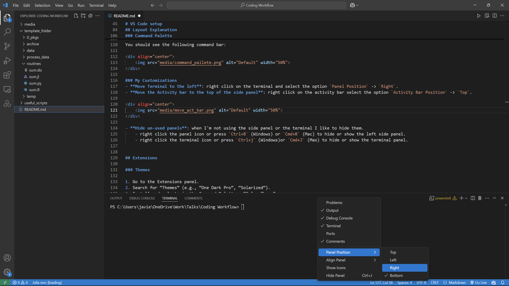
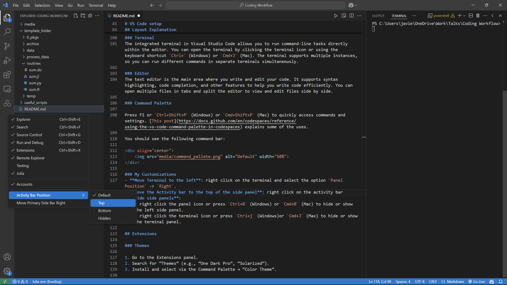
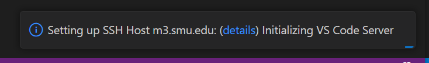
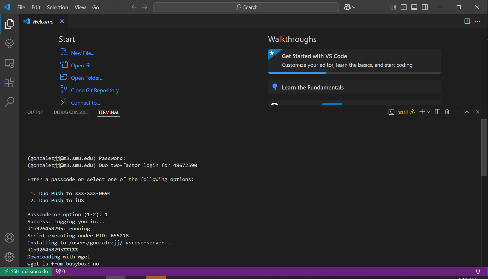

Javier Gonzalez - 2/13/2025
Single program for all your coding needs:
Extensions let you expand its functionality (debugging, languages, linting).
GitHub Copilot: Text generation chat bot without the need to open your browser!
Customization: Customize its appearance and the tools you use for coding.
|

|

|
Select Code → Download ZIP.
Alternatively, you can clone the repository using the terminal or GitHub Desktop.
Unzip the files to your desired location.
template_folder FolderThere are two ways to open a folder with VS Code:
Open Folder option on the Welcome page and locate the ./vs_code_workflow-main/template_folder folder, then press open.File → Open Folder and find the template_folder folder.This is the default layout of VS Code upon installation:
The side panel in Visual Studio Code is typically located on the left side of the window. It contains several important views and tools that help you navigate and manage your project:
The integrated terminal in Visual Studio Code allows you to run command-line tasks directly within the editor. Open the terminal by clicking the terminal icon or using the keyboard shortcut Ctrl+ (Windows) or Cmd+J (Mac). The terminal supports multiple instances, so you can run different commands in separate terminals simultaneously.
The text editor is the main area where you write and edit your code. It supports syntax highlighting, code completion, and other features to help you write code efficiently. Open multiple files in tabs and split the editor to view and edit files side by side.
Press F1 or Ctrl+Shift+P (Windows) or Cmd+Shift+P (Mac) to quickly access commands and settings. This post explains some of its uses.
You should see the following command bar:
Move Terminal to the Right: Right-click on the terminal and select the option Panel Position → Right.
Move the Activity Bar to the Top of the Side Panel: Right-click on the activity bar and select the option Activity Bar Position → Top.
|

|

|
Hide Unused Panels: When I'm not using the side panel or the terminal, I like to hide them.
Ctrl+B (Windows) or Cmd+B (Mac) to hide or show the left side panel.Ctrl+J (Windows) or Cmd+J (Mac) to hide or show the terminal panel.Enable Auto-save:
Ctrl+Shift+P (Windows) or Cmd+Shift+P (Mac).Preferences: Open Settings (UI) and press Enter.Auto Save.Files: Auto Save dropdown and choose afterDelay.Files: Auto Save Delay to your preference (e.g., for every 5 minutes, set it to 300000 milliseconds).A Visual Studio Code (VS Code) extension is a package that adds new features or functionality to the VS Code editor. Extensions enhance your development experience by providing tools, themes, debuggers, and more.
For more information on VS Code extensions, visit the Visual Studio Code Marketplace.
To access the extensions view, click on the four squares in the Activity Bar:
My current VS Code setup:
I'm currently using GitHub Dark (Default) from the GitHub Theme. I also really like the Matchalk green theme.
Let's start with Markdown, a simple language for writing text. (This file was written in Markdown.)
Open the file my_explanation.md using the file explorer. Alternatively, search for files with the keybind Ctrl+P (Windows) or Cmd+P (Mac).
Preview your Markdown by using the Preview button. Alternatively, use the command palette (Ctrl+Shift+P for Windows or Cmd+Shift+P Mac) and search for Markdown: Open Preview to the Side.
It's an AI chatbot inside VS Code that uses the power of popular models (e.g., ChatGPT, Claude, and Gemini). As a chatbot, you can ask it about coding, but the best part is that it can help you edit, explain, and debug code inside VS Code.
The best part is that with a .edu email, you have free access to GitHub Copilot.
To activate it:
You need a GitHub account.
Recommendation: Create an account with your personal email. After that, you can connect your
.eduemail to your personal account. That way, you avoid any problems with losing access after graduation.
You need to have the GitHub Copilot VS Code extension installed.
GitHub Copilot.To check that you have Copilot enabled, you will see an icon on the top bar:
Click on it and follow the configuration steps.
The easiest way to run Copilot is within a file. Press Ctrl+I (Windows) and Cmd+I (Mac), and a small chat window will appear on top of the line.
Notice a couple of things:
There are four icons on the right side of the chat:
o1 and o3-mini versions have a limit of calls per day.In the chatbox, you can type:
write the YOUR_PREFERED_LANGUAGE script to sum the first 100 integers below
Now Copilot will process the prompt and return with edits in your file:
The other way is to use Copilot in a Chat. Click the Copilot icon at the top or press Ctrl+Alt+I (Windows) or Cmd+Option+I (Mac).
For this part, you can ask Copilot to create simple scripts to sum the first 100 integers in all the programming languages you want by doing the following:
Set the context (click on the clip) as Codebase.
Paste the following prompt:
Write separate scripts in Python, Julia, R, Stata, and MATLAB to sum the first 100 integers and print the answers.
Please name all the files as "sum_100" with the correct file extension for each language and save them in the routines folder. I don't want to create a new workspace.
If you get an answer prompting to create a new workspace, just retry the prompt.
Now, move the cursor to one of the code snippets and select the option Apply to routines/sum_100.XX where XX depends on the programming language you selected. Save the file and you are done!
To close the chat box, right-click and select Hide Secondary Side Bar.
Copilot can also give you suggestions while you code. For example, it can give you another way to calculate the first 100 integers in python. Just press TAB to accept the changes and new suggestions will appear.
statRun but it requires some configuration beforehand.To run a script, just download the corresponding extension (which usually has the name of the language).
Note: Different languages have different ways of running scripts and different keybinds, but usually, clicking the play button is sufficient. Behind the scenes, it executes the script in the terminal.
The output will look something like this:
C:/Users/javie/miniforge3/python.exe "c:/Users/javie/OneDrive/Work/Talks/Coding Workflow/template_folder/routines/sum_100.py"
The sum of the first 100 integers is 5050
Pressing Shift-Enter (Windows/Mac) runs the interactive shell, which calls on python to run interactively. The python outcome should be similar to:
PS C:\Users\javie\OneDrive\Work\Talks\Coding Workflow> & C:/Users/javie/miniforge3/python.exe
Python 3.12.6 | packaged by conda-forge | (main, Sep 22 2024, 14:01:26) [MSC v.1941 64 bit (AMD64)] on win32
Type "help", "copyright", "credits" or "license" for more information.
>>> def sum_to_100():
... return sum(range(1, 101))
...
>>> print(f"The sum of the first 100 integers is {sum_to_100()}")
The sum of the first 100 integers is 5050
>>>
Jupyter extension from the Extensions tab../routines/sum_100.ipynb.Select Kernel.Python Environments; if you want to use julia, press Julia release channel.
Selecting
Python Environmentsallows you to even create a new environment. Just follow the instructions.
Live Server extension.To test it out:
Live Server extension.webpage/index.html.webpage/index.html → Open with Live Server. A new browser window will render the HTML file. Every time you save that HTML file, you will see the changes in the webpage.SMU has High Power Computing (HPC) available for students. The M3 supercomputer focuses on CPU power, while the Superpod uses GPU power.
One way to understand the difference between them is that a CPU node is designed to focus on one task, while GPUs are designed to focus on multiple tasks at a time.
As an example, if we want to sum up from 1 to 5, the CPU (without any parallelization) will go:
0 + 1 = 1
1 + 2 = 3
3 + 3 = 6
6 + 4 = 10
10 + 5 = 15
The GPU will instead:
0 + 1 + 2 = 3
3 + 4 + 5 = 12
3 + 12 = 15
Since text generation models like ChatGPT are essentially a bunch of matrix multiplications, it's better to deploy these models in GPUs (For a brief overview of these models I recommend 3Blue1Brown’s YouTube video Large Language Models explained briefly).
Here is a table summarizing the differences from AWS:
| Summary of differences | CPU | GPU |
|---|---|---|
| Function | Generalized component that handles main processing functions of a server | Specialized component that excels at parallel computing |
| Processing | Designed for serial instruction processing | Designed for parallel instruction processing |
| Design | Fewer, more powerful cores | More cores than CPUs, but less powerful than CPU cores |
| Best suited for | General purpose computing applications | High-performance computing applications |
For any problem, I recommend that you contact OIT support. The people in charge of the HPC are incredibly helpful.
To access SMU's HPC, you need to have an account with access to a ColdFront Allocation. The OIT has generated some documentation on how to use ColdFront and request storage and allocation resources.
As a student, you might need to ask your Advisor or Dr. Sposi to give you an allocation.
You can only access the HPC while connected to the SMU network. You could do it through a VPN, but I haven't tried that yet.
The HPC uses the Linux operating system, which you interface with through the terminal.
Here are some basic commands:
ls: List files and directories.cd <directory>: Change directory.pwd: Print working directory.cp <source> <destination>: Copy files or directories.mv <source> <destination>: Move or rename files or directories.rm <file>: Remove files.rmdir <directory>: Remove empty directories.When using VS Code, you don't necessarily need to use the terminal as you can drag/copy/move files in the explorer as on your own computer. However, it uses those terminal commands in the background.
Install the Remote - SSH extension.
Access the Remote by clicking on the icon in the activity panel or click on the bottom-left corner.
Select Connect to Host... → Add New SSH Host... and type:
ssh YOUR_SMU_ACCOUNT@m3.smu.edu
Note that if you want to connect to Superpod, you need to replace
m3withsuperpod.
Select the first config suggested. This saves some data to authorize the connection.
Now, press the bottom-left corner again. Select Connect to Host... → m3.smu.edu.
A new window will open. Select Linux (this is the operating system of the HPC).
Enter your password for your SMU account.
If nothing is showing, you can click on details at the bottom right to pull up the terminal. However, it's recommended that you only input things at the top. If it keeps asking you for your password, restart the connection.
The next prompt should be to select your DUO device to authorize the user.
Sometimes this option doesn't show up, so click on details in the bottom right.
It also happens that the prompt will say password, but it's actually the DUO service. To make sure, click on the details.
Once inside, press on the File Explorer and click Open Folder.
Another command bar will show, just click OK for now.
Log in again with steps 7-8.
Now you are in your HPC work directory.
Usually, what I do is create a symbolic link to my ColdFront storage allocation in the work folder on the M3 and Superpod. That way, I don't run into storage issues.
Notice that you need to reconfigure VS Code, since it's installed on another machine.
The following scripts will work without needing to request resources or an allocation from M3. However, if you want to request more resources (e.g., use 2 GPUs or several CPU cores or nodes), please refer to the Requesting More System Resources in the HPC section.
template_folder/ by dragging the folder and dropping it into the explorer on the left side.+ button to create a new terminal. template_folder/ directory:cd ~/template_folder/routines/
run_sums.bash script:bash run_sums.bash
Make sure that each script is called
sum_100.XXwhereXXis the language extension. An example of how to run batch codes in the HPC is found in./useful_codes/test_sbatch_code.bash, and you can see therun_sums.bashto see how to call different scripts. Be sure to load the corresponding modules.
If you already have a python environment ready, you can skip steps 1-4 and just activate the environment before starting step 5.
Load the necessary modules:
module purge # just to make sure no other modules are loaded
module load conda # load the python pkg manager
module list # to check python was loaded
To run other languages, you just need to load them using the
module load MODULEcommand. You can see the available modules using themodule avail list.
Create a Python virtual environment:
python -m venv test_env
It's recommended that you use a virtual environment for each project when using python.
Activate the virtual environment:
source test_env/bin/activate
Install Jupyter:
pip install jupyter ipykernel
Start Jupyter on the HPC with a tunnel:
jupyter lab --ip=0.0.0.0 --no-browser
Copy the link in the Jupyter server as seen below:
Create a new test_notebook.ipynb or open sum_100.ipynb.
At the top, press Select Kernel → Existing Jupyter Server..., and paste the link and press enter.
If one link does not work, try to use the other link.
Select the Python 3 (ipykernel).
Everything should work now!
To shut down the server, just press
Ctrl+Cand confirm withy.
If you need more resources from the HPC, you will need to use your ColdFront allocation. To request more resources, I have two bash scripts: (i) useful_codes/interactive_m3_resources.bash and (ii) interactive_superpod_resources.bash.
These scripts will ask for some information about how many CPU, GPU, memory, and time you need to run an interactive job.
BEFORE running any of the scripts, you need to change the YOUR_ALLOCATION within the scripts with the ColdFront allocation. See the documentation to find your allocation name.
...
# Generate the srun command
command="srun -A YOUR_ALLOCATION -p${partition} -N${cpu_count} -n${core_count} --mem=${memory}gb --time=${time} --pty \$SHELL"
...
sbatchThe code useful_codes/test_sbatch_code.bash is an example of how you can send jobs to the HPC that do not require interaction. It works as a sequence of terminal commands and starts with the computing resources you need as well as other information. To learn more about sending jobs, please refer to the documentation.